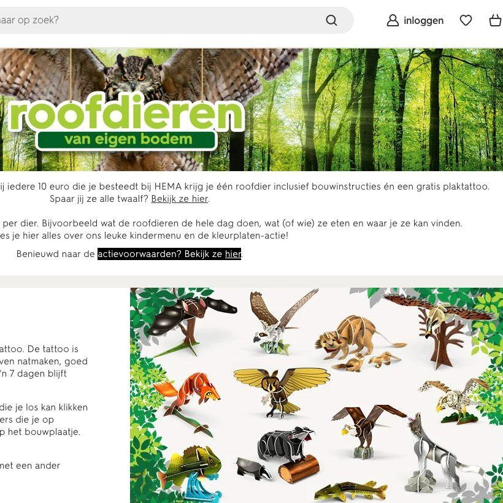
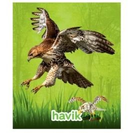
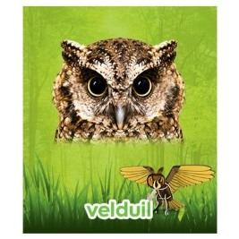
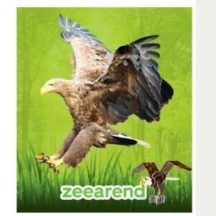

Roofdieren van eigen bodem, met buitenlandse soorten
9 november 2023 · HEMA
- Op de foto
- Buizerd en Amerikaanse zeearend
- Het ging over
- Havik, velduil en zeearend




De @hemanederland had een actie met 'Roofdieren van eigen bodem' Waarom gebruiken jullie die dan niet? Er is van alles mis. We hebben er een paar uitgelicht. 1. De foto van een 'Havik' toont een buizerd(achtige). 2. Op de foto zou een Velduil staan, dat is het zeker niet. Wie weet het goede antwoord? (oprechte vraag). 3. De foto toont een Europese zeearend! Echt bizar, want daar gaat het meestal mis. Maar helaas toont het 'bouwproject' eronder met de witte kop toch wel écht een Amerikaanse zeearend. Zonde, Hema...